Explore Jerusalem
A Brief History
Jerusalem's Old City layers Canaanite, Jewish, Roman, Byzantine, Islamic, and Ottoman sacred landscapes within Ottoman walls. The Western Wall, Church of the Holy Sepulchre, and Dome of the Rock anchor competing yet intertwined pilgrimage traditions that shaped Levantine history for three millennia. Mount of Olives viewpoints and city-wall gates connect sacred quarters to surrounding Judaean hills.
Attractions Map
Top Sights & Activities
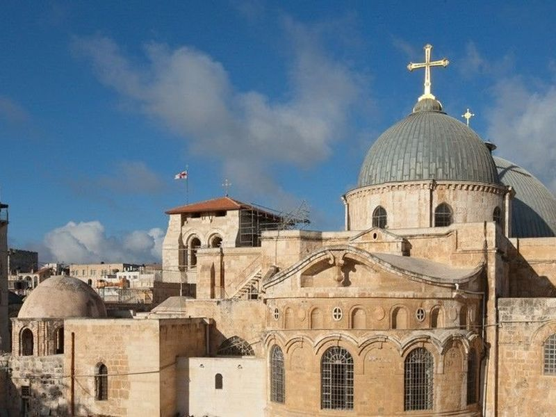
Church of the Holy Sepulchre
The Church of the Holy Sepulchre is a historic basilica dating back to the 4th century and is believed by some Christians to be the site of Jesus's tomb. The church holds historical significance, with its roots tracing back through thousands of years of Jewish history, from Byzantine Rule to the British Mandate. Visitors can experience a whirlwind tour that includes stops at sites like the Western Wall, Via Dolorosa, and Bethlehem.
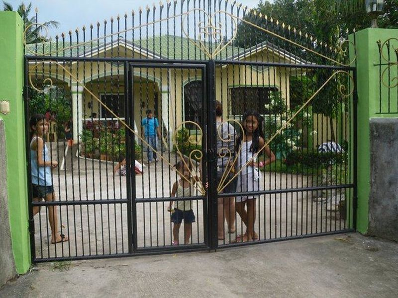
New Gate
New Gate is listed among principal sites for Jerusalem within Israel. Municipal and regional heritage listings document its place in the historic centre and travellers routes through Jerusalem. New Gate is listed among principal sites for Jerusalem within Israel.
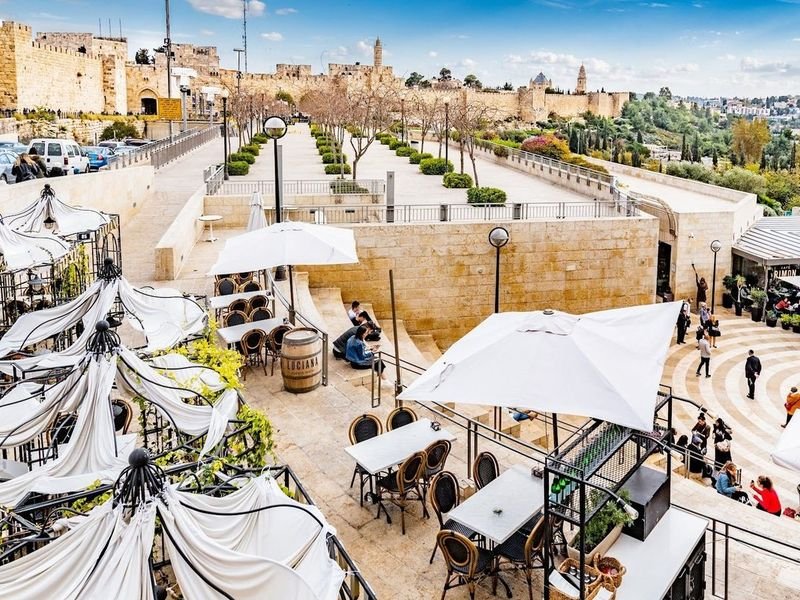
Alrov Mamilla Avenue
Alrov Mamilla Avenue, also known as Mamilla Avenue, is a and historic shopping destination located near the Old City in Jerusalem. The avenue features a variety of stores housed in converted historic buildings, offering everything from locally owned boutiques and Israeli designs to high-end fashion brands and affordable options like Zara and Mango. Visitors can enjoy street artists, painters, musicians, cafes, and dining options along the pedestrian mall.
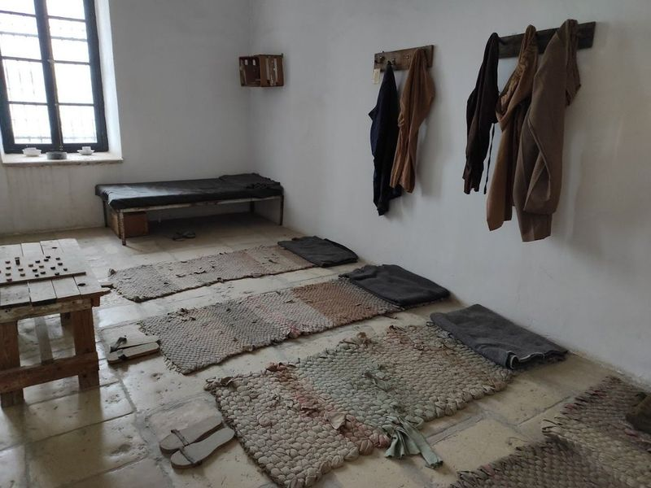
Museum of The Underground Prisoners
This museum tells the story of a group of Jewish fighters who operated an underground network in pre-state Israel. The building where the museum is located served as a prison during the British occupation of Palestine, and many sympathizers with the Jewish cause were imprisoned here.
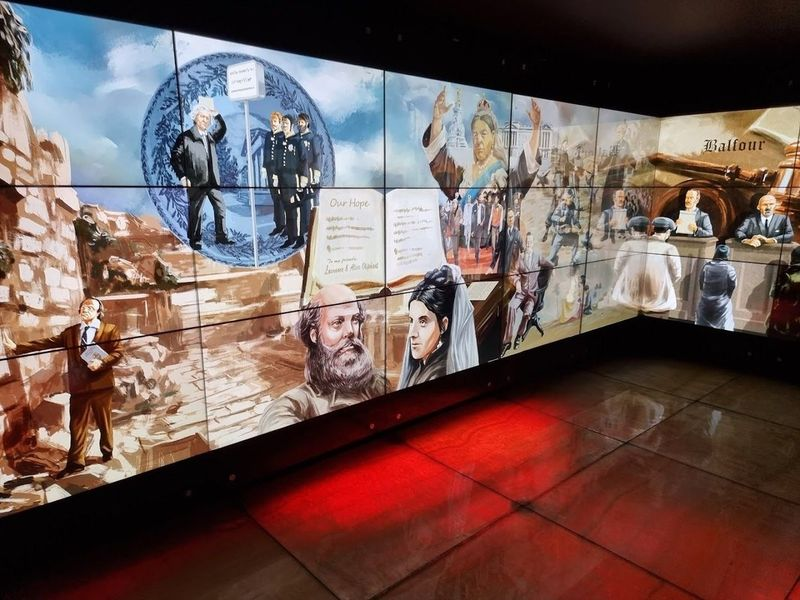
Friends of Zion Museum
Nestled in the heart of Jerusalem, the Friends of Zion Museum stands as a testament to the enduring friendship between Jewish and Christian communities throughout history. This modern facility employs cutting-edge technology, including immersive 3D movies, surround sound, and interactive touchscreens to guide visitors through a captivating narrative that spans over 3,000 years.
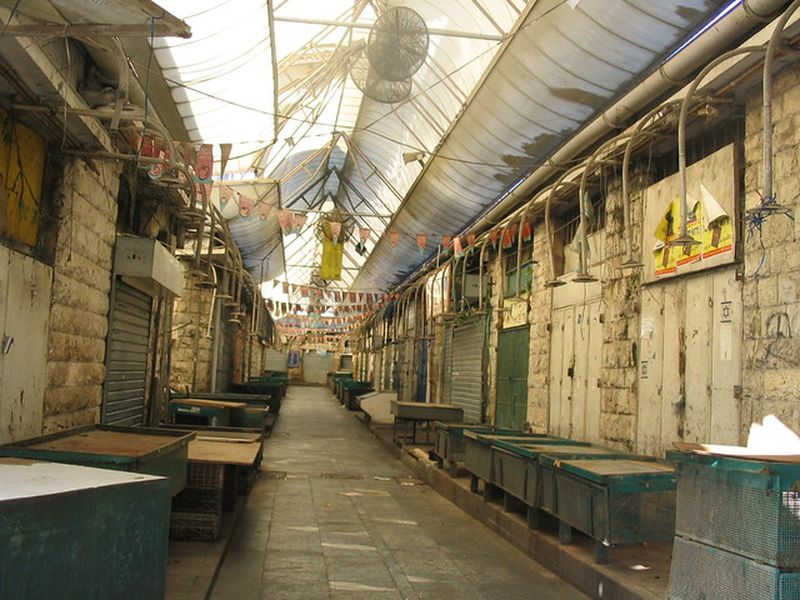
Mahaneh Yehudah Market
Mahaneh Yehudah Market is listed among principal sites for Jerusalem within Israel. Municipal and regional heritage listings document its place in the historic centre and travellers routes through Jerusalem. Mahaneh Yehudah Market is listed among principal sites for Jerusalem within Israel.
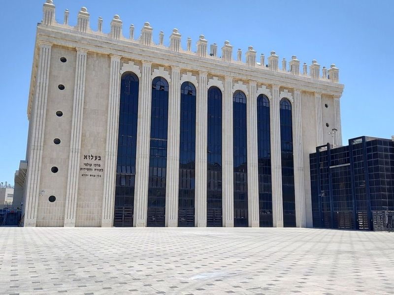
Belz Great Synagogue
The Belz Great Synagogue in Jerusalem stands as a magnificent tribute to Jewish heritage, far surpassing its original European counterpart. This architectural marvel is not only the largest synagogue in Jerusalem but also potentially the largest in the world, accommodating up to 7,000 worshippers within its grand central sanctuary. Its striking design draws inspiration from the Second Temple and becomes even more enchanting when illuminated at night.
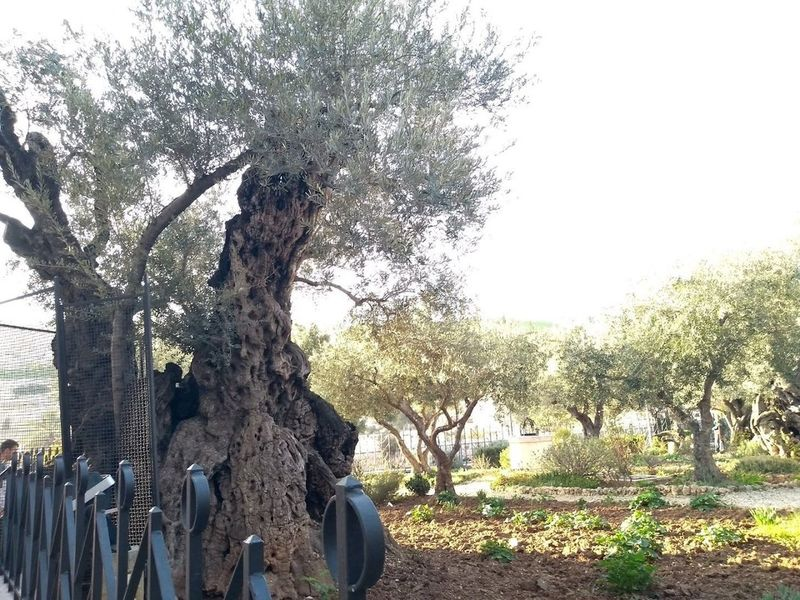
Gethsemane
The Garden of Gethsemane, located at the base of the Mount of Olives in Jerusalem, is a remarkable site steeped in Christian heritage and historical depth. This serene olive grove is renowned as the location where Jesus prayed prior to his arrest, making it a significant pilgrimage destination for many Christians. The garden boasts ancient olive trees that are thought to be over 900 years old, offering visitors a tangible link to its biblical narrative.
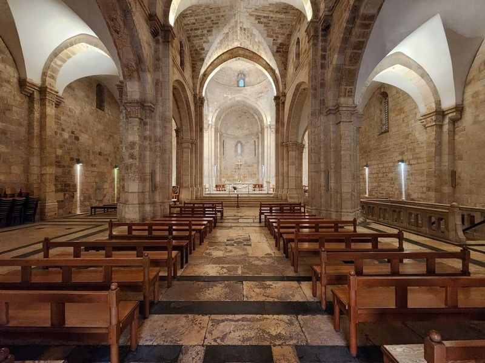
St. Anne's Church, Jerusalem
St. Anne's Church in Jerusalem is a restored Romanesque church with a rich history dating back to its completion in 1138 by the Crusaders. Situated near the beginning of the Via Dolorosa, it holds significance as the traditional birthplace of the Virgin Mary. The church's remarkable Romanesque architecture features high arches and an austere design, representing medieval European architecture in Jerusalem.
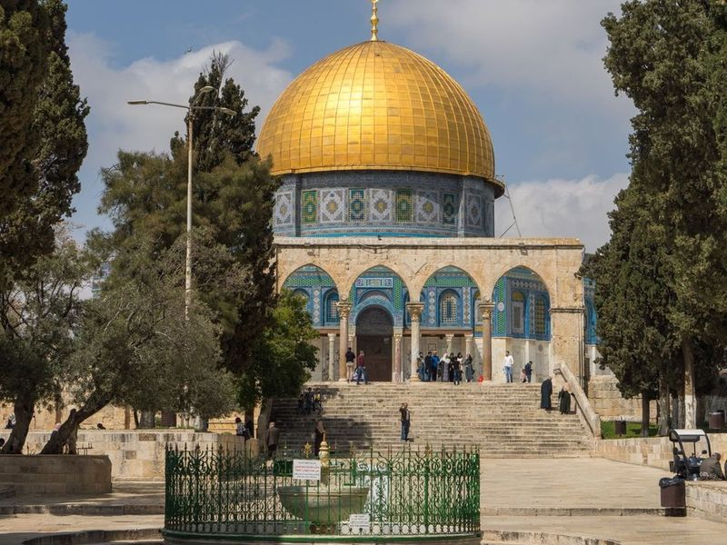
Dome of the Rock
The Dome of the Rock is an Islamic shrine with a gold-topped structure built around 690AD. It holds great significance for Christians and Jews as well. Situated on the Temple Mount, it was completed under the rule of Umayyad Caliph Abd al-Malik and has been covered in gold twice in the 20th century. Despite common misconceptions, it is not a mosque but rather a shrine to the Foundation Stone, important in both Torah and Islamic beliefs.
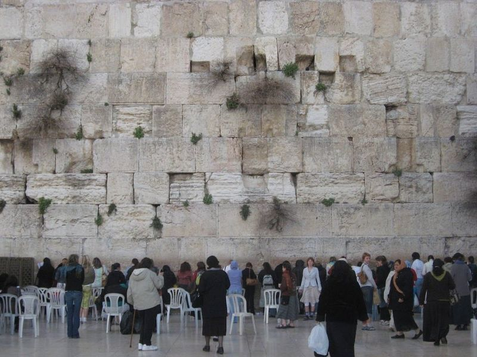
Western Wall
The Western Wall, also known as the Wailing Wall, is a significant site in the Jewish Quarter of Jerusalem. It is a remnant of the ancient wall that surrounded the Temple courtyard and holds great religious and historical importance for Jewish people. Visitors can witness worshippers reciting verses or leaving written prayers in its stones. The wall was built around 2000 years ago to support Temple Mount, and after the destruction of the Second Temple, it became a place for lamentation.
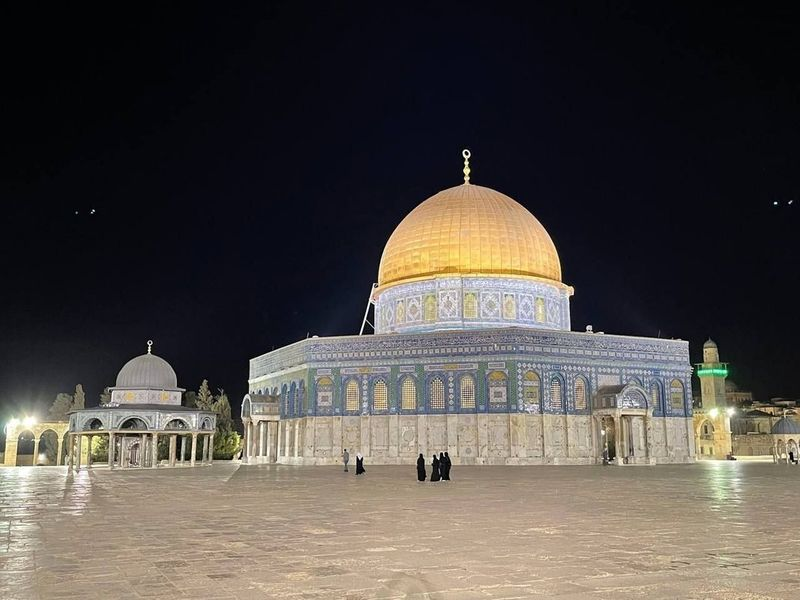
Al-Aqsa Mosque
Nestled in the heart of Jerusalem's Old City, Al-Aqsa Mosque stands as a magnificent testament to Islamic architecture and spirituality. Revered as the third holiest site in Islam, this domed mosque has deep historical roots, having been rebuilt between the 8th and 11th centuries. It occupies a significant location on Temple Mount, which is also sacred to Judaism due to its connection with the ancient Temple.
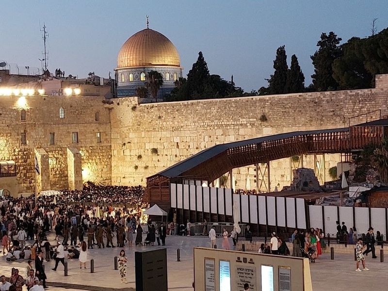
Dung Gate
The Dung Gate is an ancient landmark constructed in 1537 that leads pedestrians to the Western Wall. It is situated not far from the Wailing Wall and provides access to various archaeological sites such as the City of David, where Jerusalem began 3000-4000 years ago. This area has many underground paths, some of which are submerged in water, allowing visitors to explore the historical exhibition at the Davidson Center located next to the Wailing Wall.
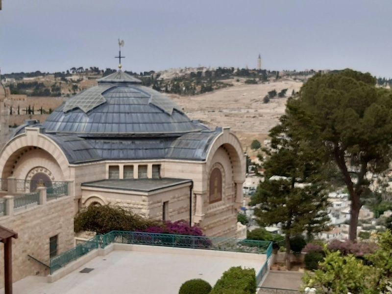
Saint Peter in Gallicantu
The Church of Saint Peter in Gallicantu is a remarkable hillside church built in 1931 to commemorate the denial of Jesus by the apostle Peter. It is believed to be the site where Peter denied Jesus and later accepted him after the resurrection. The church has an intriguing design with four levels, including the upper church, middle church, guardroom, and dungeon where Jesus was believed to have been kept after his arrest.
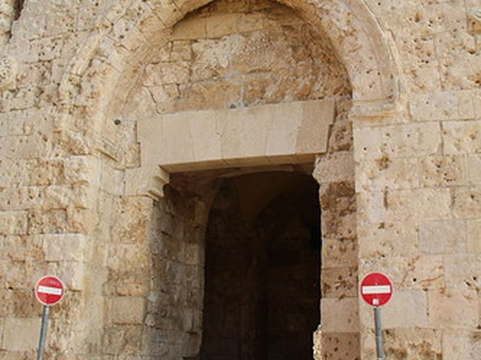
Zion Gate
Zion Gate is listed among principal sites for Jerusalem within Israel. Municipal and regional heritage listings document its place in the historic centre and travellers routes through Jerusalem. Zion Gate is listed among principal sites for Jerusalem within Israel.
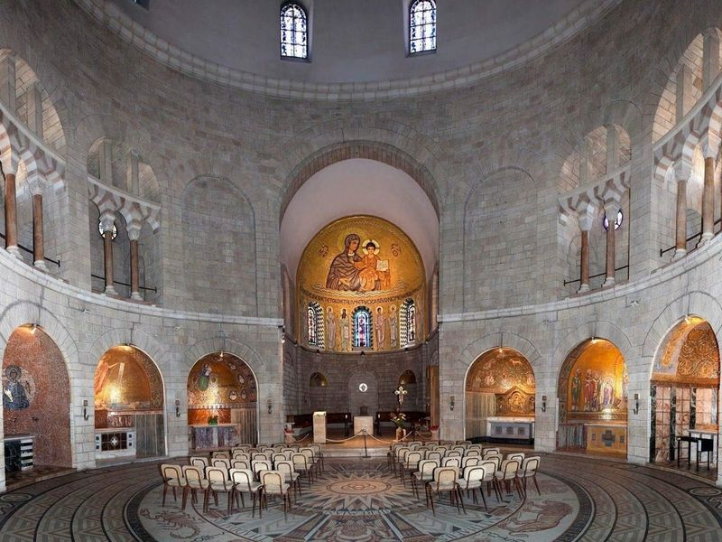
Dormition Abbey - Hagia Maria
Dormition Abbey, also known as Hagia Maria, is a historic Christian complex located on Mount Zion in Jerusalem. It is believed to be the site where the Virgin Mary passed away and where Jesus held the Last Supper. The abbey hosts Christmas carols and a traditional Midnight Mass on Christmas Eve, followed by a communal walk to Bethlehem with the monks.
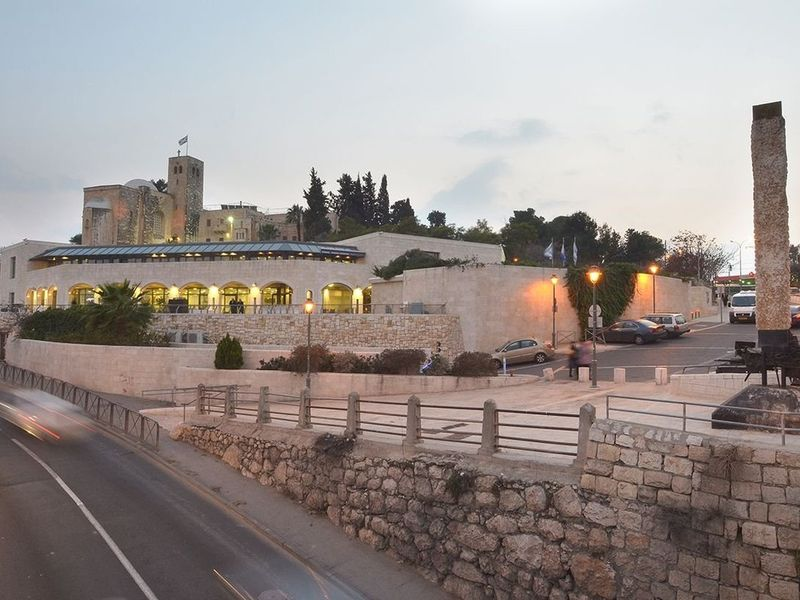
Menachem Begin Heritage Center
The Menachem Begin Heritage Center in Jerusalem is a captivating destination that offers a deep dive into the life and impact of the former revolutionary soldier and Israeli leader. Situated on the Hinnom Ridge, it provides views of Mount Zion and the Old City walls. The center boasts multimedia exhibits, documentaries, and touchscreen displays that make for an engaging experience. Additionally, recent archaeological findings from the First Temple period add to its uniqueness.
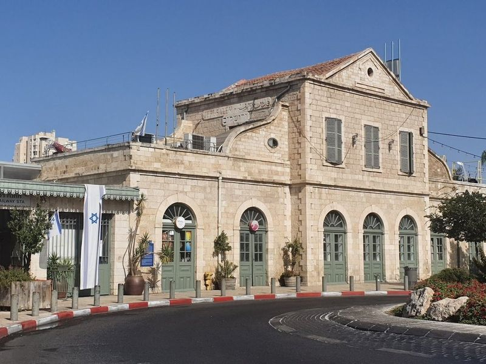
The First Station
The First Station in Jerusalem is a cultural and entertainment hub located at a 19th-century train station. Renovated in recent years, it offers an array of experiences including local food, organic produce shopping, boutiques with local and international goods, live concerts, and themed events. This historical complex is In Jerusalem and features a bustling restaurant scene.
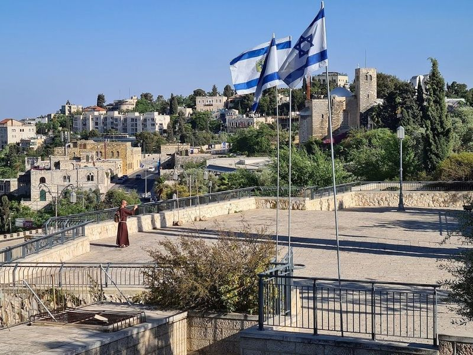
Montefiore Windmill
Nestled in the charming Mishkenot Shaananim neighborhood, the Montefiore Windmill stands as a testament to Jerusalem's rich history and romantic allure. Constructed in 1857, this structure was envisioned by Sir Moses Montefiore during his multiple visits to the city in the 19th century. His dream was to alleviate overcrowding within the Old City walls by establishing a new community complete with residential apartments and a windmill for flour production.
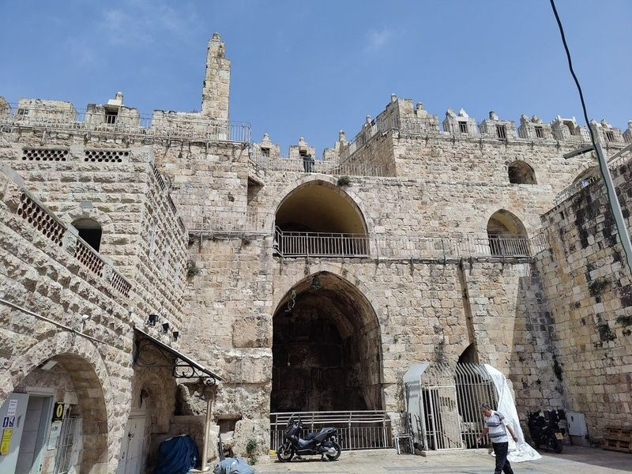
Damascus Gate
Damascus Gate, a historic stone structure dating back to 1537, serves as one of the primary entrances to Jerusalem's Old City. It is located near significant religious sites such as the believed crucifixion and resurrection site of Jesus. Annually, an evening of Christmas carols in English, Hebrew, and Arabic takes place here. Additionally, nearby attractions include Ein Kerem village with its ancient holy sites like the Church of the Visitation and the Church of John the Baptist.
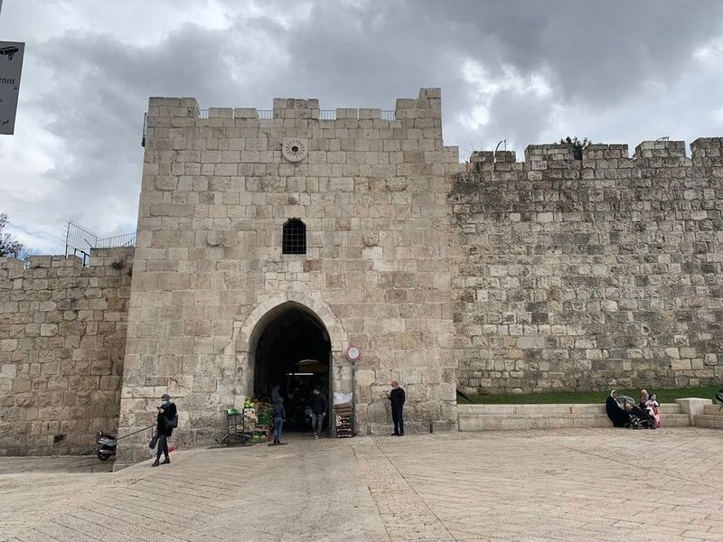
Herod's Gate
Herod's Gate is an Ottoman-era access gate located in the Old City of Jerusalem. It provides quick access to public transportation and taxis, making it convenient for reaching West Jerusalem's city center. The gate also leads to a variety of shops and eateries. Visitors can walk through the 500-foot-long Herodian Channel in the tunnels, passing by the massive foundation stones of the Western Wall before exiting near this site.
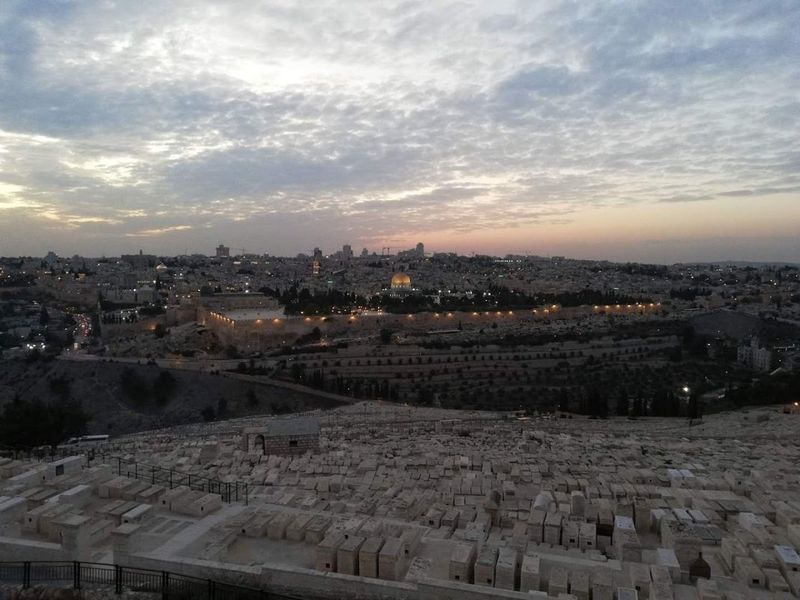
Mt of Olives
The Mount of Olives, a historic mountain referenced in the Old and New Testaments of the Bible, holds significant religious and cultural importance. It has been a sacred spot for centuries and is now home to several important churches and holy sites. Notably, it was mentioned in the Scriptures as King David's escape route during his son's rebellion and later in the prophets. In the New Testament, it is where Jesus taught his disciples, wept over Jerusalem, and ascended into heaven.
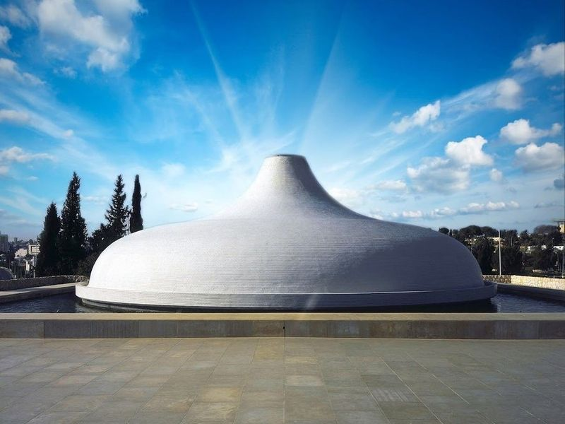
Shrine of the Book
The Shrine of the Book, located within the Israel Museum, is a unique dome-shaped structure that houses the Dead Sea Scrolls, significant archaeological discoveries of the 20th century. These ancient biblical manuscripts were accidentally found in remote caves near Qumran and are considered a literary treasure of importance. The building's design is inspired by the covers of the pots in which the scrolls were originally discovered.
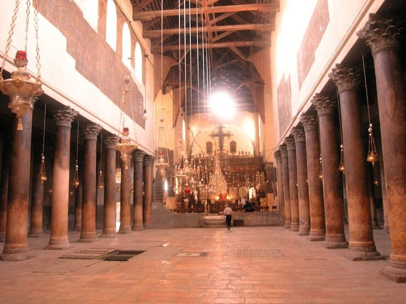
Church of the Nativity
The Church of the Nativity is a 4th-century heritage site built above a cave believed to be the birthplace of Jesus. The city where it stands has references dating back to the Canaanite period, but its significance grew when Queen Helena identified it as Jesus' birthplace. The historic center still reflects its Ottoman heritage with narrow streets, stone structures, and architectural features from that era.
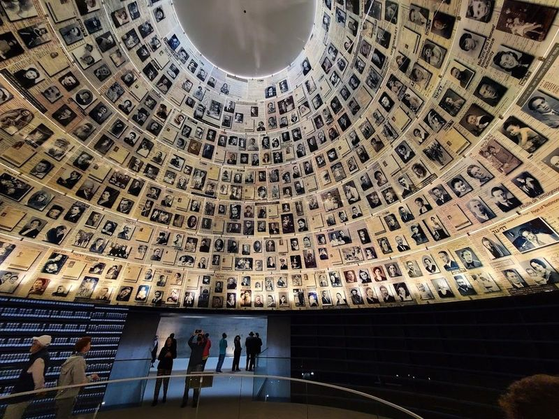
Yad Vashem
Yad Vashem, established in 1953, is a memorial complex dedicated to honoring the six million Jewish victims of the Holocaust. It also pays tribute to the bravery of Jewish resistance fighters and non-Jews who risked their lives to save Jews during that time. Located on Har Hazikaron in Jerusalem, it includes monuments, a historical museum, an archive and research center for documenting the Holocaust, and an educational facility.
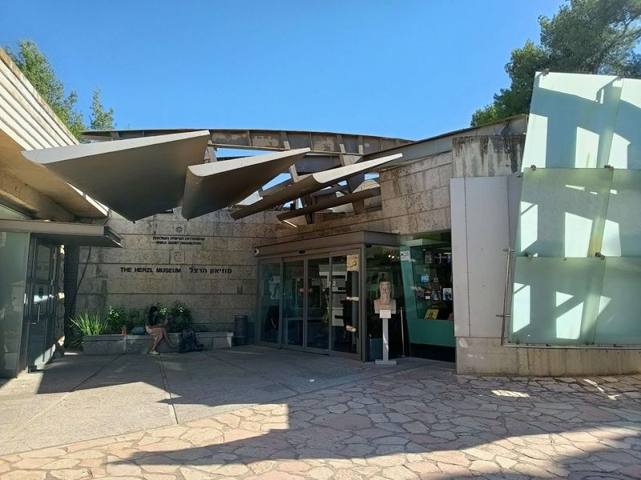
Herzl Museum
The Herzl Museum, located at Mount Herzl in Israel, is a tribute to Theodor Herzl, the visionary behind the Zionist movement and the establishment of the State of Israel. The museum offers an interactive experience showcasing Herzl's life and his significant role in advocating for a Jewish state. Visitors can explore reconstructions of his study and library, as well as view original documents, photos, and audio-visual presentations.
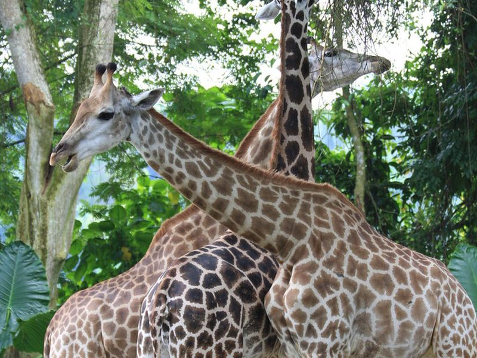
The Tisch Family Zoological Gardens in Jerusalem
The Tisch Family Zoological Gardens in Jerusalem is listed among principal sites for Jerusalem within Israel. Municipal and regional heritage listings document its place in the historic centre and travellers routes through Jerusalem. The Tisch Family Zoological Gardens in Jerusalem is listed among principal sites for Jerusalem within Israel.

Israel Aquarium
Israel Aquarium is listed among principal sites for Jerusalem within Israel. Municipal and regional heritage listings document its place in the historic centre and travellers routes through Jerusalem. Israel Aquarium is listed among principal sites for Jerusalem within Israel.
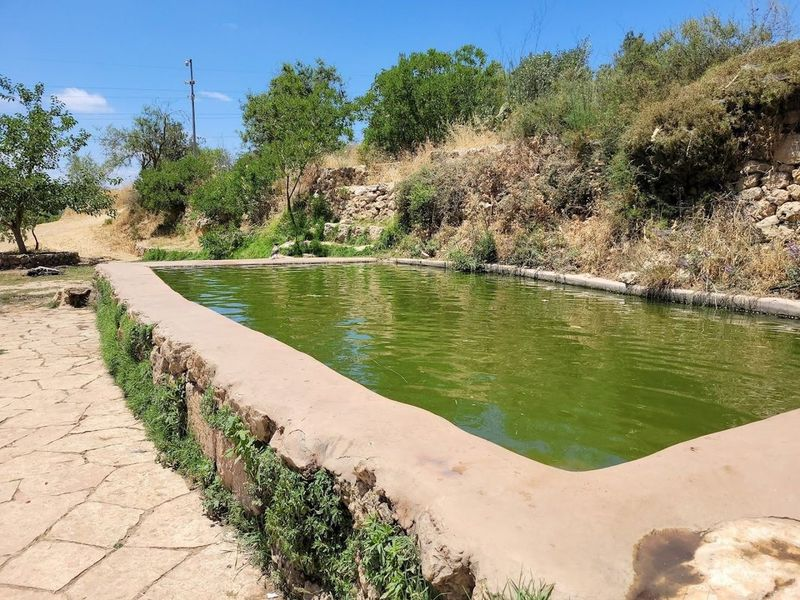
Ein Lavan
Nestled in the picturesque Judean Hills, Ein Lavan is a hidden gem that beckons visitors year-round, but truly shines during late summer and early autumn. This natural spring features two beautifully refurbished pools—one shallow enough for little ones to splash around in and another deeper pool for those seeking a refreshing swim. Accessing this serene oasis involves climbing a set of stone stairs after following blue trail markers from the nearby Jerusalem Biblical Zoo parking lot.
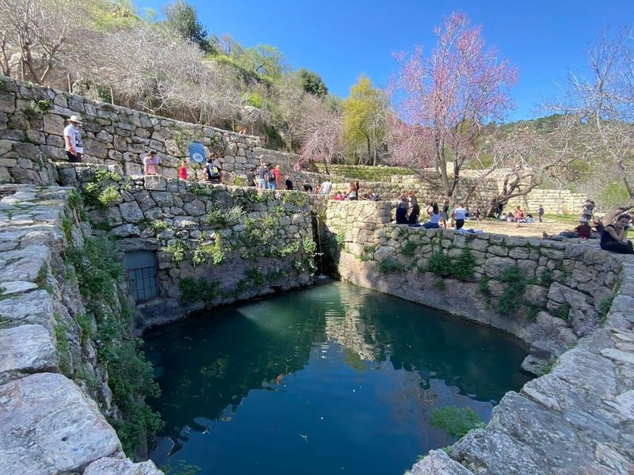
Sataf
Sataf, located just a short drive from Jerusalem, is an ancient agricultural site nestled in the Mountains of Jerusalem. The area boasts millennia-old olive and almond trees, as well as vineyards that thrive on its slopes. Visitors can explore five interconnected hiking trails that offer various options for a circular walk starting from the main entrance and car park. Along the blue trail, hikers pass through olive groves, a well, and an inhabited cave from ancient times.
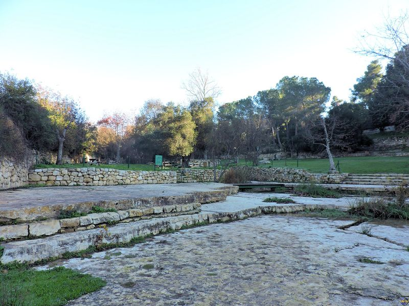
Ein Hemed National Park
Ein Hemed National Park is listed among principal sites for Jerusalem within Israel. Municipal and regional heritage listings document its place in the historic centre and travellers routes through Jerusalem. Ein Hemed National Park is listed among principal sites for Jerusalem within Israel.
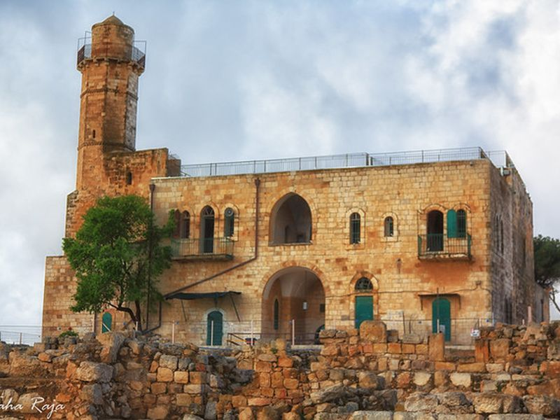
Nebi Samuel National Park
Nebi Samuel National Park is listed among principal sites for Jerusalem within Israel. Municipal and regional heritage listings document its place in the historic centre and travellers routes through Jerusalem. Nebi Samuel National Park is listed among principal sites for Jerusalem within Israel.